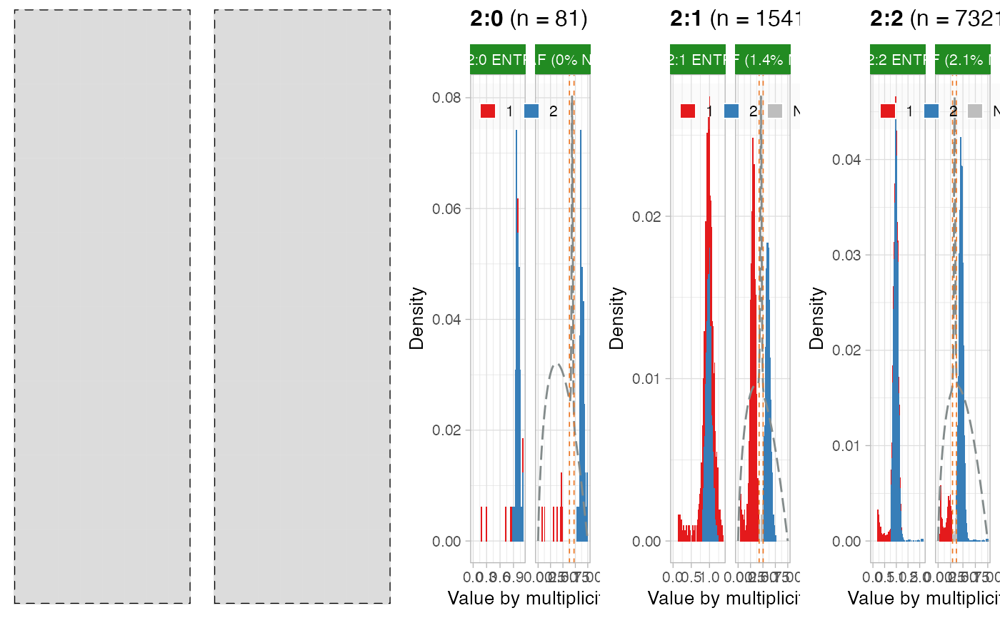

This function provides the implementation of a set of entropy-related routines that can estimate Cancer Cell Fraction values (CCFs) for the available mutations. The implemented routine is described in the package vignette `"Computation of Cancer Cell Fractions"` that is available at the URL https://caravagn.github.io/CNAqc/articles/ccf_computation.html. This function creates a field `CCF_estimates` inside the returned object which contains both the estimated CCF values and the plot of the report of this analysis.
compute_CCF(
x,
karyotypes = c("1:0", "1:1", "2:0", "2:1", "2:2"),
muts_per_karyotype = 25,
cutoff_QC_PASS = 0.1,
method = "ENTROPY"
)An object of class cnaqc, created by the init function.
The karyotypes to use, this package supports only c('2:1', '2:0', '2:2').
Minimum number of mutations that are required to be mapped to a karyotype in order to compute CCF values (default 25).
Percentage of mutations that can be not-assigned (NA) in a karyotype.
If the karyotype has more than cutoff_QC_PASS percentage of non-assigned mutations then
the overall set of CCF calls is failed for the karyotype.
Either "ENTROPY" or "ROUGH", to reflect the two different algorithms
to compute CCF. See the package vignette to understand the differences across methods.
An object of class cnaqc, with CCF values available for extraction and plotting.
Getters function CCF and plot_CCF.
data('example_dataset_CNAqc')
x = init(example_dataset_CNAqc$snvs, example_dataset_CNAqc$cna, example_dataset_CNAqc$purity)
#> [ CNAqc - CNA Quality Check ]
#>
#> ℹ Using reference genome coordinates for: GRCh38.
#> ℹ Predicting coding
#> ℹ Drivers are annotated, but 'gene' column is missing, using mutation location.
#> ℹ Predicting coding
#> ✔ Fortified calls for 12963 somatic mutations: 12963 SNVs (100%) and 0 indels.
#> ℹ Predicting coding
#> ! CNAs have no CCF, assuming clonal CNAs (CCF = 1).
#> ℹ Predicting coding
#> ✔ Fortified CNAs for 267 segments: 267 clonal and 0 subclonal.
#> ℹ Predicting coding
#> ✔ 12963 mutations mapped to clonal CNAs.
#> ℹ Predicting coding
x = compute_CCF(x, karyotypes = c('1:0', '1:1', '2:1', '2:0', '2:2'))
#> Warning: Some karyotypes have fewer than25and will not be analysed.
#> ── Computing mutation multiplicity for karyotype 2:1 using the entropy method. ─
#> ℹ Predicting coding
#> ℹ Expected Binomial peak(s) for these calls (1 and 2 copies): 0.307958477508651 and 0.615916955017301
#> ℹ Predicting coding
#> ℹ Mixing pre/ post aneuploidy: 0.55 and 0.45
#> ℹ Predicting coding
#> ℹ Not assignamble area: [0.423423423423423; 0.504504504504504]
#> ℹ Predicting coding
#> ── Computing mutation multiplicity for karyotype 2:0 using the entropy method. ─
#> ℹ Predicting coding
#> ℹ Expected Binomial peak(s) for these calls (1 and 2 copies): 0.445 and 0.89
#> ℹ Predicting coding
#> ℹ Mixing pre/ post aneuploidy: 0.09 and 0.91
#> ℹ Predicting coding
#> ℹ Not assignamble area: [0.631578947368421; 0.723684210526316]
#> ℹ Predicting coding
#> ── Computing mutation multiplicity for karyotype 2:2 using the entropy method. ─
#> ℹ Predicting coding
#> ℹ Expected Binomial peak(s) for these calls (1 and 2 copies): 0.235449735449735 and 0.470899470899471
#> ℹ Predicting coding
#> ℹ Mixing pre/ post aneuploidy: 0.09 and 0.91
#> ℹ Predicting coding
#> ℹ Not assignamble area: [0.290780141843972; 0.368794326241135]
#> ℹ Predicting coding
print(x)
#> ── [ CNAqc ] 12963 mutations in 267 segments (267 clonal, 0 subclonal). Genome
#> ℹ Predicting coding
#>
#> ℹ Predicting coding
#> ── Clonal CNAs
#> ℹ Predicting coding
#>
#> 2:2 [n = 7478, L = 1483 Mb] ■■■■■■■■■■■■■■■■■■■■■■■■■■■ { CTCF }
#> 4:2 [n = 1893, L = 331 Mb] ■■■■■■■
#> 3:2 [n = 1625, L = 357 Mb] ■■■■■■
#> 2:1 [n = 1563, L = 420 Mb] ■■■■■■ { TTN }
#> 3:0 [n = 312, L = 137 Mb] ■
#> 2:0 [n = 81, L = 39 Mb] { TP53 }
#> 16:2 [n = 4, L = 0 Mb]
#> 25:2 [n = 2, L = 1 Mb]
#> 3:1 [n = 2, L = 1 Mb]
#> 106:1 [n = 1, L = 0 Mb]
#>
#> ℹ Sample Purity: 89% ~ Ploidy: 4.
#> ℹ Predicting coding
#>
#> ℹ There are 3 annotated driver(s) mapped to clonal CNAs.
#> ℹ Predicting coding
#> chr from to ref alt DP NV VAF driver_label is_driver
#> chr2 179431633 179431634 C T 117 77 0.6581197 TTN TRUE
#> chr16 67646006 67646007 C T 120 54 0.4500000 CTCF TRUE
#> chr17 7577106 7577107 G C 84 78 0.9285714 TP53 TRUE
#>
#> ✔ Cancer Cell Fraction (CCF) data available for karyotypes:2:1, 2:0, and 2:2.
#> ℹ Predicting coding
#> ✔ PASS CCF via ENTROPY.
#> ℹ Predicting coding
#> ✔ PASS CCF via ENTROPY.
#> ℹ Predicting coding
#> ✔ PASS CCF via ENTROPY.
#> ℹ Predicting coding
# Extract the values with these other functions
CCF(x)
#> # A tibble: 9,122 × 19
#> chr from to ref alt FILTER DP NV VAF ANNOVAR_FUNCTION
#> <chr> <dbl> <dbl> <chr> <chr> <chr> <dbl> <dbl> <dbl> <chr>
#> 1 chr2 357969 357970 C A PASS 104 58 0.558 intergenic
#> 2 chr2 909304 909305 A G PASS 15 7 0.467 ncRNA_intronic
#> 3 chr2 1035751 1035752 C T PASS 93 57 0.613 intronic
#> 4 chr2 1326719 1326720 A T PASS 104 55 0.529 intronic
#> 5 chr2 1515962 1515963 C T PASS 90 50 0.556 intronic
#> 6 chr2 2198361 2198362 G T PASS 125 42 0.336 intronic
#> 7 chr2 2898536 2898537 C T PASS 109 58 0.532 downstream
#> 8 chr2 3125481 3125482 A G PASS 134 35 0.261 ncRNA_intronic
#> 9 chr2 3832360 3832361 A T PASS 120 68 0.567 intergenic
#> 10 chr2 3878408 3878409 T A PASS 126 10 0.0794 intergenic
#> # … with 9,112 more rows, and 9 more variables: GENE <chr>, is_driver <lgl>,
#> # driver_label <chr>, gene <chr>, type <chr>, karyotype <chr>,
#> # segment_id <chr>, mutation_multiplicity <dbl>, CCF <dbl>
plot_CCF(x)
#> Warning: Removed 4 rows containing missing values (geom_bar).
#> Warning: Removed 22 rows containing non-finite values (stat_bin).
#> Warning: Removed 5 rows containing missing values (geom_bar).
#> Warning: Removed 157 rows containing non-finite values (stat_bin).
#> Warning: Removed 5 rows containing missing values (geom_bar).
